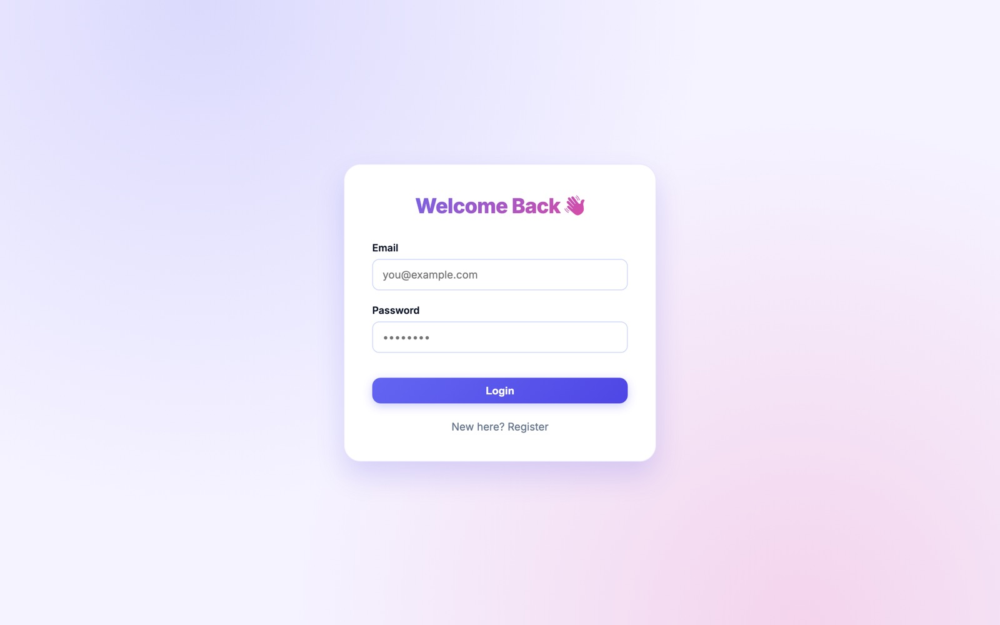
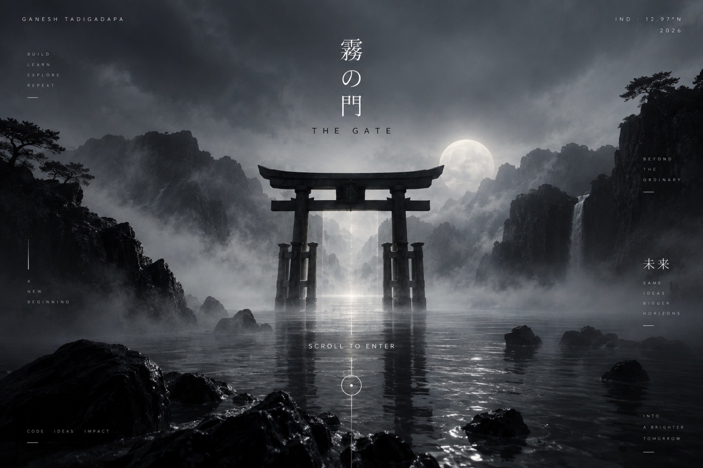
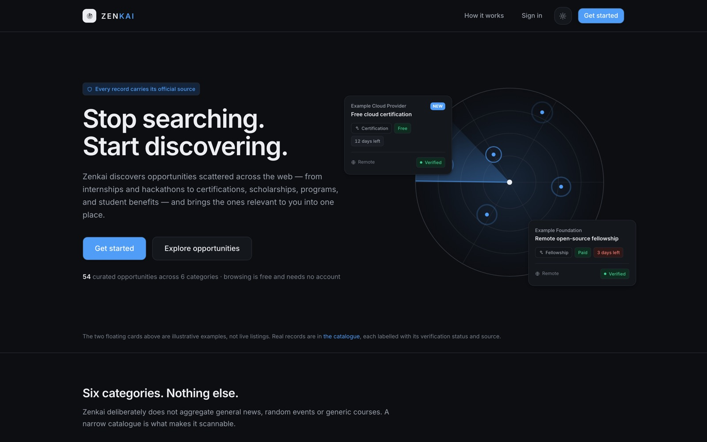
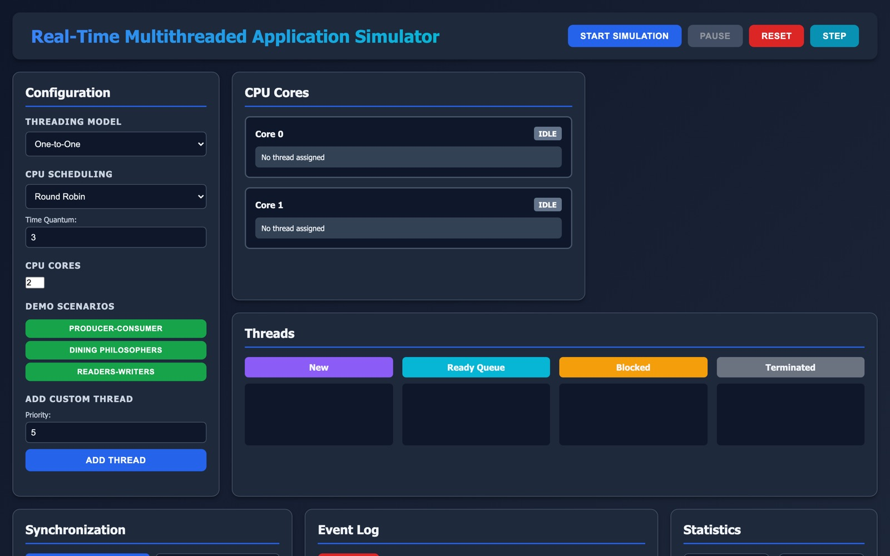
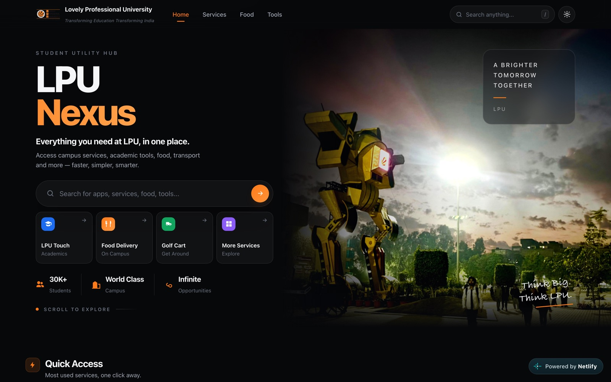
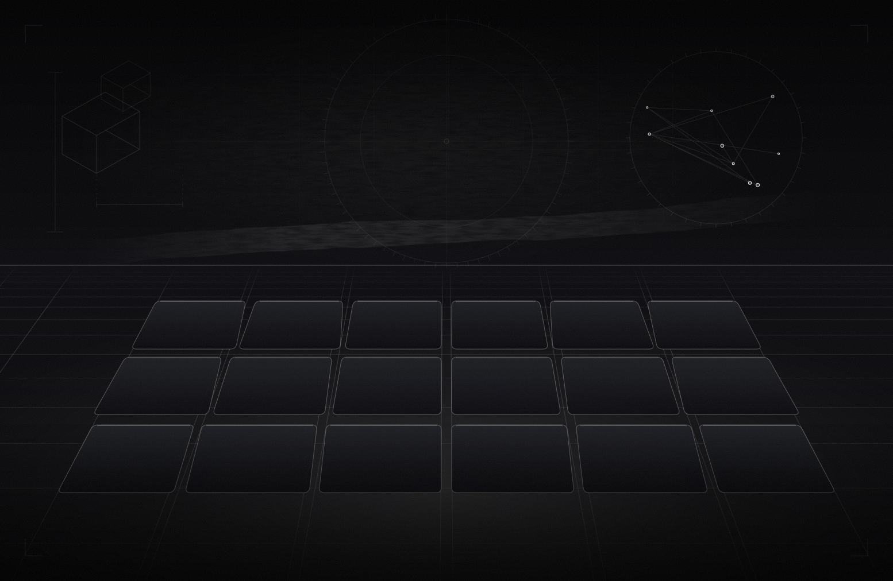

![]()



A curious mind builds a bigger tomorrow.
Real problems, real impact — where the engineering, the design and the intent all meet.






03 — Tech StackTurn
Ideas
Into
Impact
Same tools.
Different
possibilities.
Tools that build a better tomorrow
A blend of languages, frameworks and tools
I use to build real-world applications.
A better
tomorrow
Same
curiosity.
Bigger
horizons.